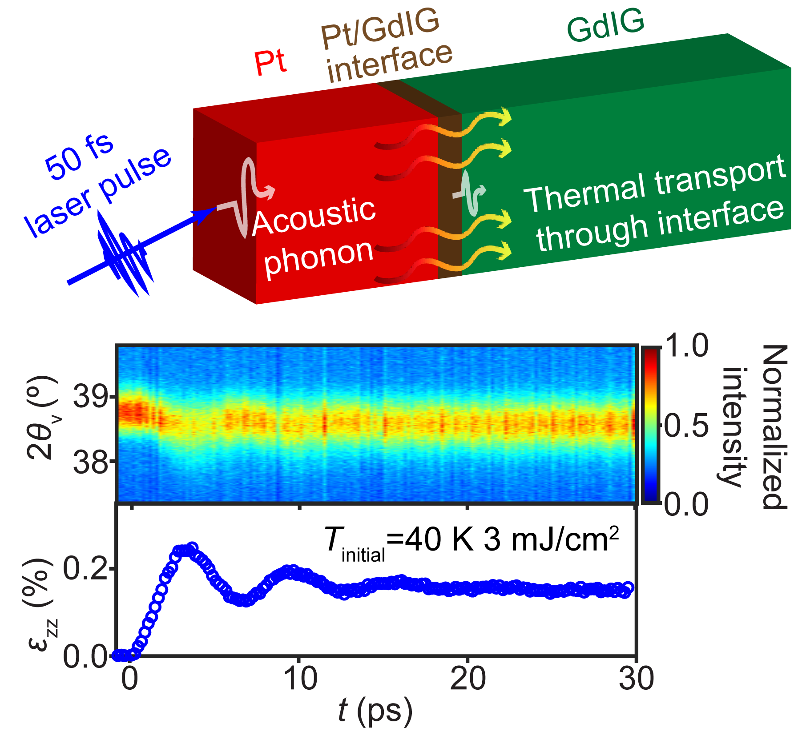

Acoustic & thermal phonons through interfaces
Click for details →
How external electric fields perturb and reorganize charge-density-wave domains in correlated quantum materials (1T-TaS₂), revealing nonequilibrium fluctuation pathways and metastable configurations.